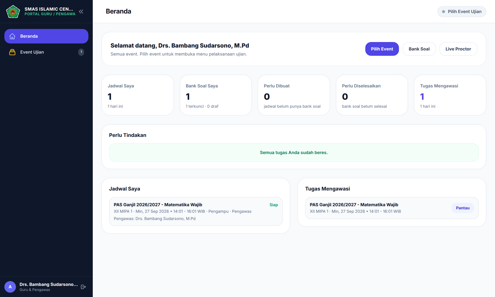
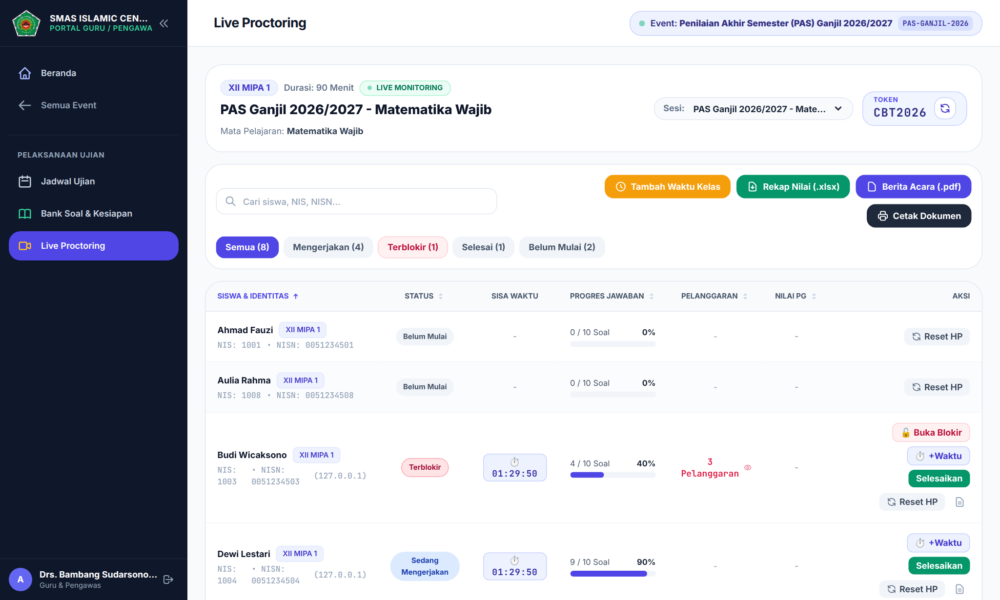
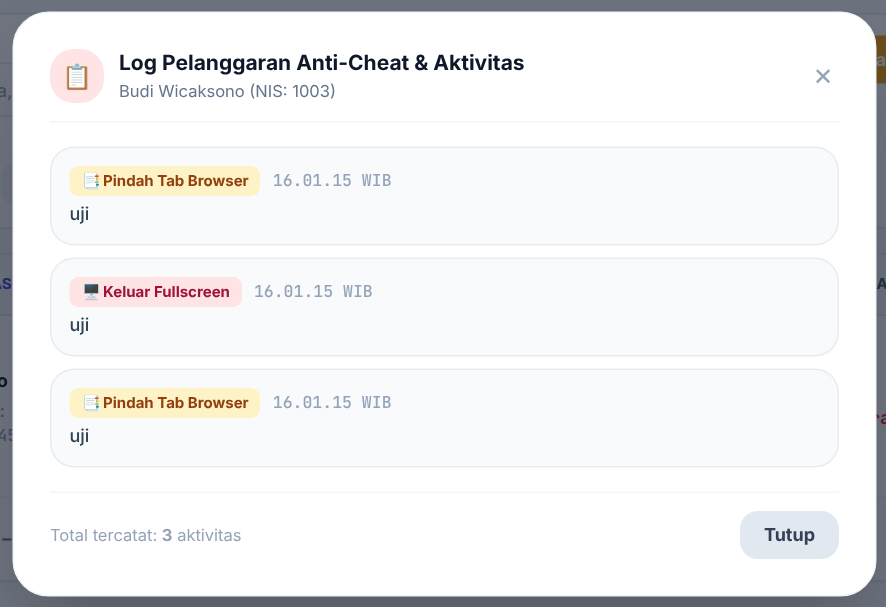
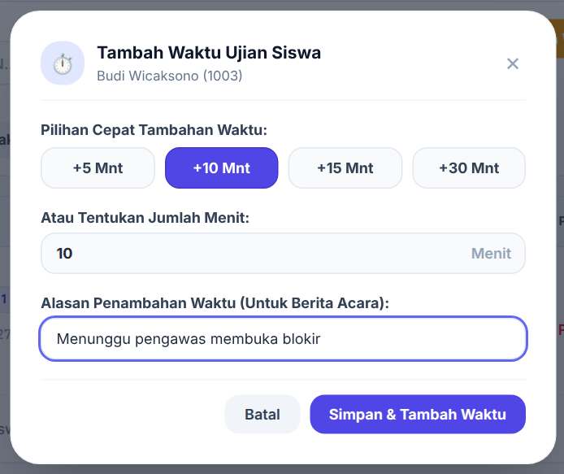
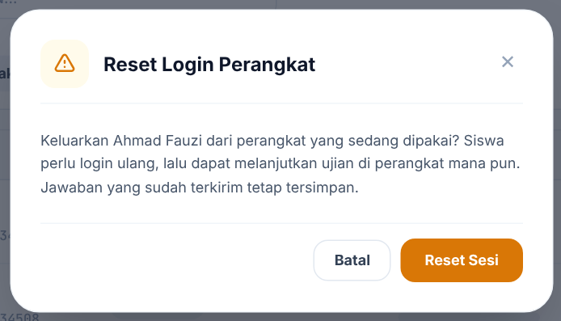
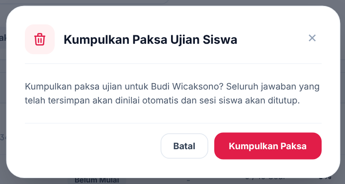
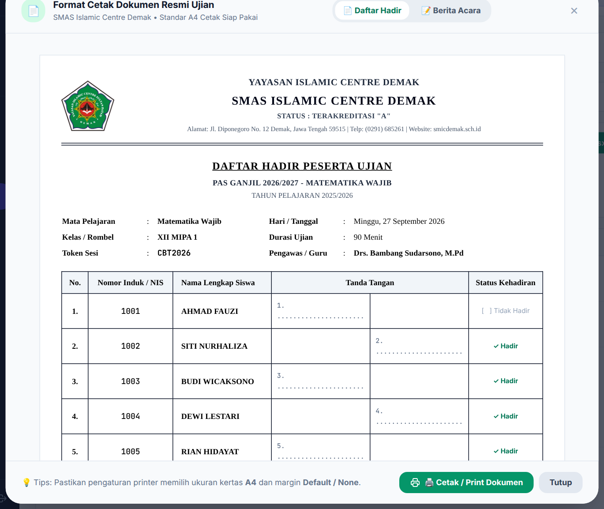

Isi Panduan
- 1Alur Kerja Hari UjianDaftar periksa sebelum, selama, dan sesudah ujian
- 2Membuka Layar PengawasanMasuk, memilih event, dan memilih sesi
- 3Membaca Layar PengawasanStatus, sisa waktu, progres, dan pelanggaran
- 4Membuka Blokir SiswaMenangani layar UJIAN TERKUNCI
- 5Menambah WaktuUntuk satu siswa atau seluruh kelas
- 6Siswa Pindah PerangkatReset HP saat perangkat bermasalah
- 7Mengumpulkan PaksaMenutup ujian siswa tertentu
- 8Dokumen UjianDaftar hadir, berita acara, dan rekap nilai
- 9Tanya JawabKejadian yang sering muncul di ruang ujian
Bab 1Alur Kerja Hari Ujian
Daftar periksa berikut merangkum tugas pengawas dari sebelum hingga sesudah ujian. Rincian setiap tindakan ada di bab berikutnya.
Sehari sebelum
- Pastikan akun Bapak/Ibu bisa masuk.
- Periksa di Beranda bagian Tugas Mengawasi: jadwal Bapak/Ibu sudah tercantum.
- Jika jadwal belum tercantum, hubungi admin kurikulum untuk ditugaskan sebagai pengawas.
Sebelum ujian dimulai
- Buka Live Proctoring dan pilih sesi ruangan Bapak/Ibu.
- Cetak daftar hadir (Bab 8) bila diperlukan.
- Minta siswa mengisi daya HP, menutup aplikasi lain, dan tersambung ke Wi-Fi sekolah.
- Umumkan token yang tampil di kotak TOKEN saat jam ujian dimulai.
Selama ujian
- Pantau siswa yang masih Belum Mulai.
- Tangani siswa Terblokir (Bab 4).
- Catat kejadian khusus untuk berita acara.
- Beri tambahan waktu hanya bila ada kendala yang sah (Bab 5).
Setelah ujian
- Pastikan semua siswa berstatus Selesai.
- Unduh Rekap Nilai (.xlsx) dan Berita Acara (.pdf), atau cetak dokumen resmi.
- Tanda tangani berita acara dan serahkan ke panitia.
Bab 2Membuka Layar Pengawasan
Kapan dipakai: setiap kali akan mengawasi ruang ujian.

- Masuk dengan username dan password Bapak/Ibu.
- Di Beranda, lihat bagian Tugas Mengawasi, lalu klik Pantau pada jadwal yang dimaksud. Cara lain: klik Pilih Event, pilih event ujian, lalu buka menu Live Proctoring.
- Periksa kolom Sesi di kanan atas. Jika Bapak/Ibu mengawasi lebih dari satu sesi, pilih sesi yang sesuai ruangan.
- Lihat token di kotak TOKEN. Umumkan token ini kepada siswa saat ujian dimulai.
Bab 3Membaca Layar Pengawasan

| Kolom | Artinya |
|---|---|
| Status | Belum Mulai: siswa belum memasukkan token. Sedang Mengerjakan: ujian berjalan. Terblokir: ujian terkunci karena batas pelanggaran tercapai. Selesai: jawaban sudah dikumpulkan. |
| Sisa Waktu | Hitungan mundur tiap siswa. Berubah merah dan berkedip saat sisa waktu 5 menit atau kurang. |
| Progres Jawaban | Jumlah soal yang sudah dijawab dari total soal. |
| Pelanggaran | Jumlah pelanggaran siswa. Klik angkanya untuk melihat catatan lengkap. |
| Nilai PG | Nilai otomatis dari soal pilihan ganda dan isian, tampil setelah siswa selesai. Soal essay dinilai guru terpisah. |
Gunakan tombol filter Semua, Mengerjakan, Terblokir, Selesai, dan Belum Mulai untuk menyaring daftar. Angka di dalam kurung adalah jumlah siswa pada status itu. Kolom pencarian menerima nama, NIS, atau NISN.
Bab 4Membuka Blokir Siswa
Kapan dipakai: saat layar siswa berubah merah bertuliskan UJIAN TERKUNCI dan siswa mengangkat tangan.
Mengapa siswa terkunci
Sistem mencatat pelanggaran setiap kali siswa pindah ke aplikasi atau tab lain, menarik status bar atau membuka layar terpisah, atau keluar dari layar penuh. Jika jumlahnya mencapai batas pada jadwal (misalnya 3 kali), ujian terkunci otomatis.

- Klik filter Terblokir. Hanya siswa yang terkunci yang tampil.
- Klik tulisan merah … Pelanggaran pada baris siswa untuk melihat catatannya. Periksa sebelum membuka kunci.
- Klik Buka Blokir. Kunci terbuka setelah muncul pemberitahuan "Berhasil membuka blokir untuk (nama siswa)".
- Minta siswa mengetuk Periksa Status Pembukaan Kunci di layarnya. Ujian berlanjut dengan jawaban yang sudah ada.
Bab 5Menambah Waktu
Kapan dipakai: ada kendala yang bukan kesalahan siswa, misalnya jaringan putus, perangkat diganti, atau siswa menunggu kunci dibuka.

Untuk satu siswa
- Klik +Waktu pada baris siswa. Tombol ini hanya ada untuk siswa yang sedang mengerjakan atau terblokir.
- Pilih +5, +10, +15, atau +30 Mnt, atau ketik jumlah menit sendiri.
- Isi Alasan Penambahan Waktu. Alasan ini tercatat dan muncul di catatan aktivitas siswa.
- Klik Simpan & Tambah Waktu.
Untuk seluruh kelas
Klik Tambah Waktu Kelas di atas tabel, lalu isi dengan cara yang sama. Tambahan waktu diterapkan serentak kepada semua siswa yang sedang mengerjakan atau terblokir pada jadwal ini. Siswa yang sudah selesai tidak terpengaruh.
Bab 6Siswa Pindah Perangkat
Kapan dipakai: HP siswa mati, rusak, atau siswa perlu pindah ke komputer sekolah.
Satu akun siswa hanya aktif di satu perangkat. Saat siswa masuk di perangkat baru, perangkat lama otomatis keluar. Jadi untuk pindah perangkat, siswa cukup masuk kembali di perangkat pengganti dengan akun yang sama.
- Minta siswa masuk dengan akun yang sama di perangkat pengganti.
- Siswa memilih jadwal, mengisi token yang sama, lalu mengetuk Mulai Kerjakan Ujian.
- Ujian berlanjut dengan sisa waktu dan jawaban yang sudah terkirim ke server.
Kapan tombol Reset HP dipakai
Klik Reset HP pada baris siswa bila Bapak/Ibu perlu mengeluarkan siswa dari perangkat yang sedang dipakai, misalnya akun siswa dipakai orang lain atau perangkat tertinggal dalam keadaan masuk. Setelah dikonfirmasi, perangkat itu keluar otomatis dan siswa harus masuk ulang.

Bab 7Mengumpulkan Paksa
Kapan dipakai: siswa tidak dapat melanjutkan ujian, meninggalkan ruangan, atau ujian harus ditutup atas keputusan panitia.

- Klik Selesaikan pada baris siswa.
- Baca konfirmasinya, lalu klik Kumpulkan Paksa.
- Muncul pemberitahuan berisi nilai otomatis siswa. Status berubah menjadi Selesai.
Bab 8Dokumen Ujian
Ketiga tombol dokumen ada di atas tabel pengawasan.
| Tombol | Hasilnya |
|---|---|
| Rekap Nilai (.xlsx) | Berkas Excel berisi No, NIS, NISN, Nama Siswa, Kelas, Mulai Ujian, Selesai, Pelanggaran, Nilai Akhir, dan Status. |
| Berita Acara (.pdf) | Berkas PDF berita acara pelaksanaan ujian beserta ringkasan kejadian. |
| Cetak Dokumen | Membuka format cetak Daftar Hadir dan Berita Acara siap cetak A4. |

- Klik Cetak Dokumen, lalu pilih Daftar Hadir atau Berita Acara.
- Periksa kop, tahun pelajaran, dan nama penanda tangan.
- Klik Cetak / Print Dokumen. Di jendela cetak, pilih kertas A4 dan margin Default atau None.
Bab 9Tanya Jawab
| Kejadian | Yang perlu dilakukan |
|---|---|
| Jadwal tidak muncul di daftar siswa | Jadwal hanya tampil di rentang jam ujian, bila jadwal aktif dan bank soal sudah dikunci. Hubungi admin kurikulum bila jam sudah masuk tetapi jadwal belum tampil. |
| Siswa lupa password | Hubungi admin kurikulum untuk mengganti password, atau gunakan No. Ujian dan password di kartu peserta. |
| Tombol tindakan abu-abu | Bapak/Ibu tidak ditugaskan pada jadwal itu. Minta admin menambahkan Bapak/Ibu sebagai pengawas. |
| Siswa terkunci lagi setelah dibuka | Jumlah pelanggaran tidak kembali ke nol, jadi satu pelanggaran baru langsung mengunci ujian. Periksa catatan, lalu putuskan apakah kunci dibuka lagi. |
| Siswa kehilangan jaringan | Siswa tetap bisa mengerjakan; jawaban disimpan di HP dan terkirim saat jaringan kembali. Pastikan siswa tidak menutup browser. |
| Siswa keluar sendiri dari akun | Siswa masuk ulang, pilih jadwal, dan isi token yang sama. Ujian berlanjut. |
| Waktu ujian habis | Jawaban siswa otomatis dikumpulkan dan status berubah menjadi Selesai. |